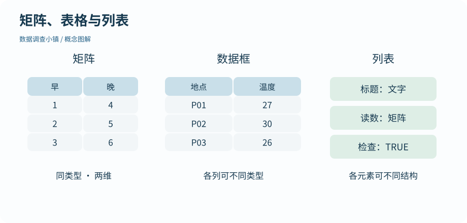

第 10 节 · 对象仓库
矩阵与列表，各装什么
一个分析结果为什么能同时有数字、表格和文字？
区分矩阵、数据框和列表；理解 [ ] 与 [[ ]]。
本节目录
运行位置：打开练习包内的 r-lab.Rproj，在项目根目录运行本节脚本。安装与准备见第 02—04 节；第 13 节说明扩展包。
同类值排成两维
矩阵通常是同一种基础类型的元素，加上行列维度。matrix(1:6, nrow = 3) 默认按列填充：第一列是 1、2、3，第二列是 4、5、6。不要按照屏幕上的横向阅读习惯猜填入顺序；必要时明确指定 byrow = TRUE。
图解 · 矩阵、表格与列表

矩阵强调同类值的二维结构，数据框允许各列不同类型，列表允许每个元素装不同结构。
放大查看 ↗ 保存 SVG ↓# 数据调查小镇 · 第 10 节
# 在 r-lab 项目根目录运行；输出只写入 results。
measurements <- matrix(1:6, nrow = 3, dimnames = list(c("P01", "P02", "P03"), c("morning", "afternoon")))
print(measurements)
print(measurements[2, 1])
print(dim(measurements[, 1, drop = FALSE]))
box <- list(title = "Park notes", readings = measurements, checked = TRUE)
print(names(box))
print(class(box["readings"]))
print(class(box[["readings"]]))
print(box$readings) morning afternoon
P01 1 4
P02 2 5
P03 3 6
[1] 2
[1] 3 1
[1] "title" "readings" "checked"
[1] "list"
[1] "matrix" "array"
morning afternoon
P01 1 4
P02 2 5
P03 3 6和数据框相似，矩阵也用 [行, 列] 提取。保留单列矩阵时可以使用 drop = FALSE。矩阵适合整齐的同类数值，而数据框允许不同列各有类型；把含文字的表直接转成矩阵，可能使数字也变成文字。
不同东西放进一个有名字的盒子
列表允许每个元素有不同类型和长度。本例把标题、矩阵和一个检查标志放进 box。它不是把三者挤成同一类数值，而是分别保留它们。
一个模型结果常常就是这样组织的：系数是一组数，残差是另一组数，模型调用可能是表达式。现在理解列表，后面看到 comparison$conf.int 就不会觉得输出里突然出现了神秘结构。
一层容器，与容器里的东西
box["readings"] 取出一个仍然包在列表里的子列表；box[["readings"]] 取出该元素本身，也就是矩阵。box$readings 在这种按名字取元素的场景也很常用。
区别可以这样检查：先看 class()，再看值。不要把“打印看起来差不多”当成结构相同。外层结构不同，下一步可用的索引和函数也可能不同。
为后面的学习留一个接口
初学阶段不要求你掌握所有复杂嵌套结构。先会问：它是一列值、一张表，还是装着几个结果的列表？str() 可以简要查看结构，names() 查看带名字的部分。遇见新函数的返回值时，先检查结构再取内容，往往比猜位置更稳妥。
动手试试
拿到真正的矩阵
已知 box 的 readings 元素是矩阵，用哪一种提取方式能直接得到它？解释单方括号的结果。
给我一点提示
比较 class(box["readings"]) 与 class(box[["readings"]])。
查看参考解法与解释
box[["readings"]] 或 box$readings 直接取得矩阵；box["readings"] 仍是含一个元素的列表。
带走这一点
矩阵适合同类型的二维值，数据框适合记录，列表可以组合结构不同的结果；取一个子列表和取出其中元素也不同。下一节把这些内存里的对象与磁盘上的文件联系起来。
检查一下理解
matrix(1:6, nrow = 3) 默认怎样填入？
查看解释
默认 byrow = FALSE，因此先填第一列，再填第二列。